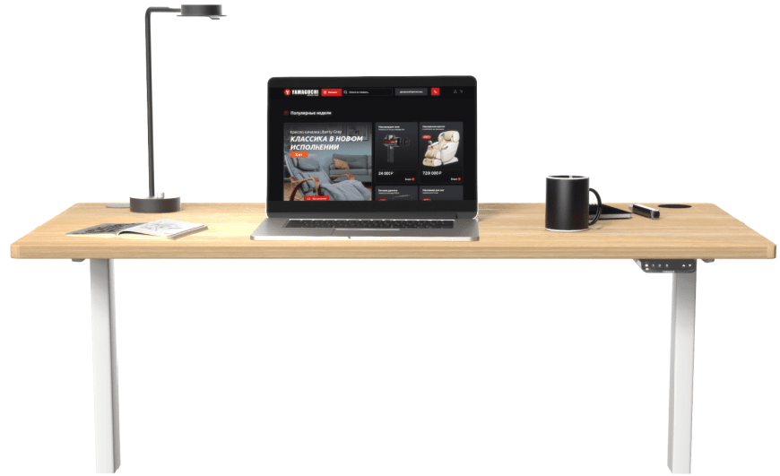
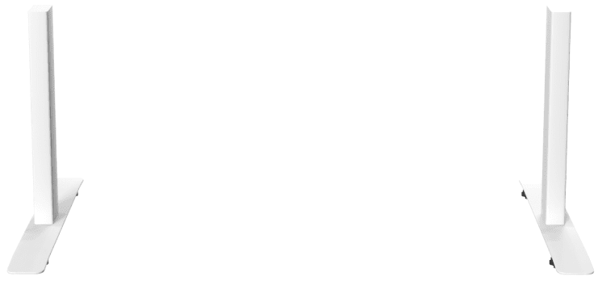

Cтильная столешница , выполненной
из экологически безопасного материала (ДСП),
и усиленной стальной рамы не составит труда
разместить на поверхности инновационного
стола большое количество крупногабаритной
техники: стол выдерживает нагрузку до 80 кг.
Также столешница, обладающая меламиновым
покрытием, хорошо переносит механические
воздействия (царапины или удары),
при контакте с водой не разрушается, устойчиво
переносит бытовые химические вещества
и не выгорает под воздействием
ультрафиолета.